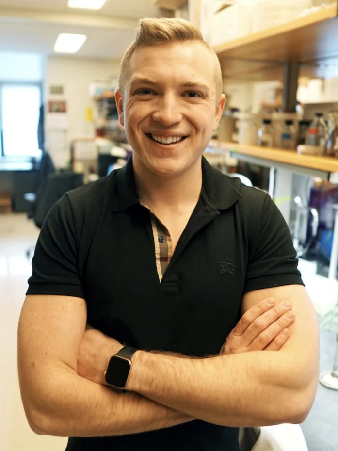
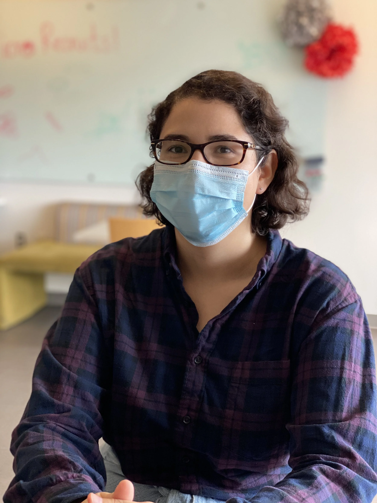
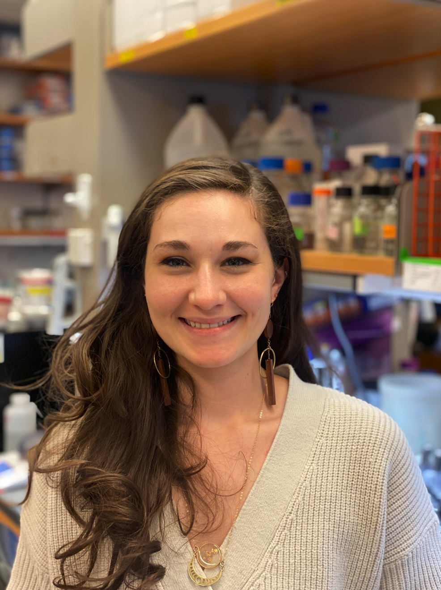
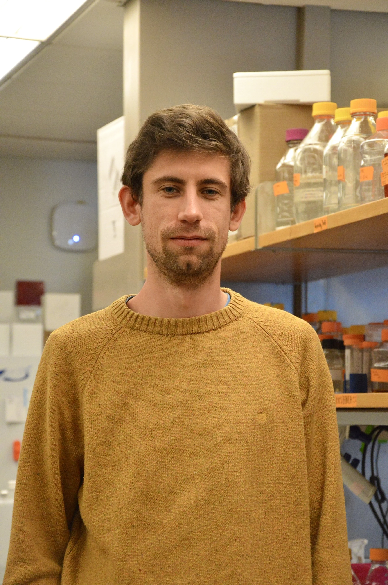
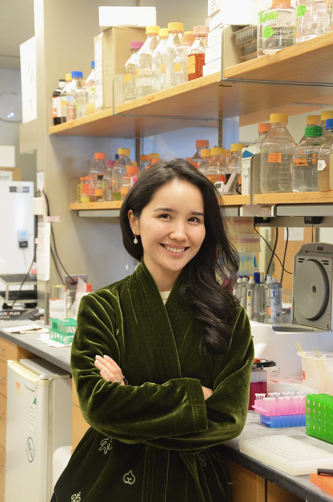
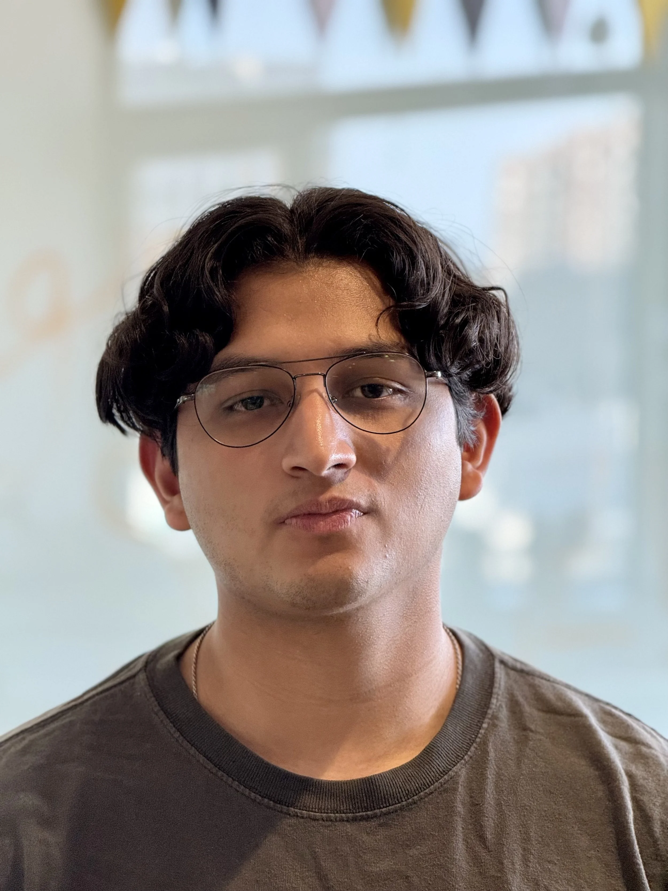
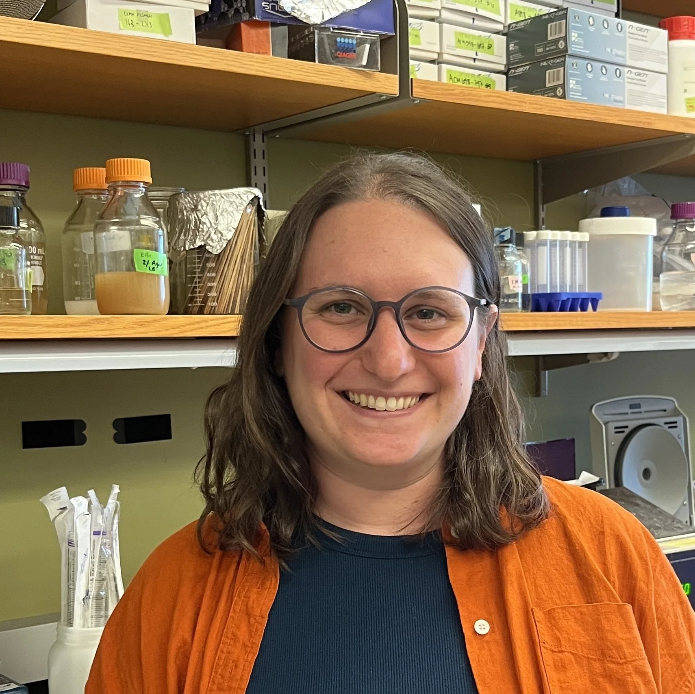
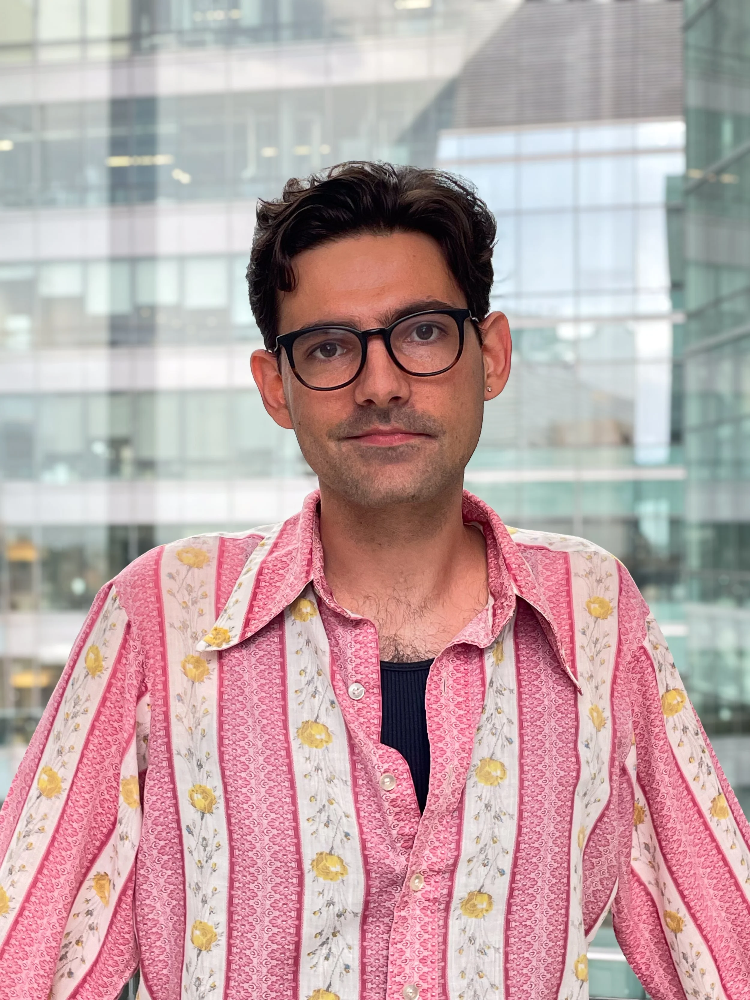
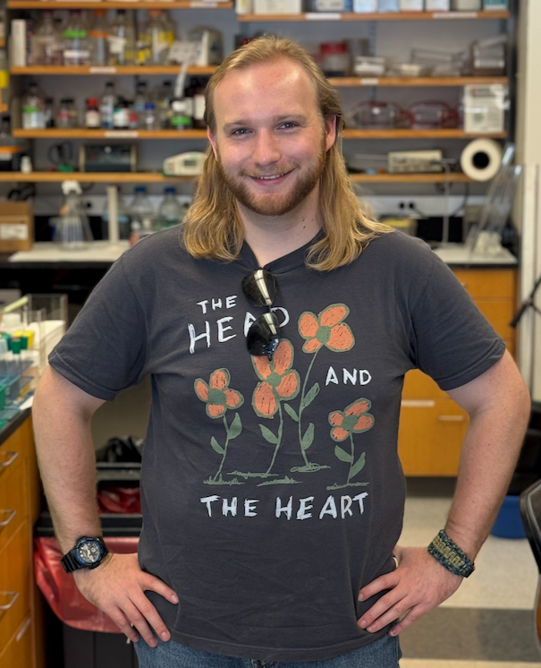

Professor in the Department of Microbiology at Harvard Medical School and Investigator of the Howard Hughes Medical Institute.
Team
Current Bernhardt Lab members across research staff, postdoctoral fellows, graduate students, and undergraduate researchers.
Showing 19 current lab members
Professor in the Department of Microbiology at Harvard Medical School and Investigator of the Howard Hughes Medical Institute.

Laboratory Manager, Thomas Bernhardt Lab
Research operations lead for the Bernhardt and Abraham HHMI labs at HMS, overseeing finance, hiring, procurement, compliance, and lab infrastructure, and supporting HMS Community Phages.

BBS Graduate Student | NIH F31 Fellow
I am interested in examining the function of cell wall synthesis in E. coli.
Postdoctoral Fellow | NIH K99/R00 Fellow | Former HHWF Fellow
I am interested in cell envelope biogenesis in Corynebacterium glutamicum.
BPH Graduate Student | NIH F31 Fellow
The general aim of my research is to understand the regulation of cell wall synthesis in the Gram-negative bacterium Pseudomonas aeruginosa.

Postdoctoral Fellow
I am interested in cell wall biogenesis in Corynebacterium glutamicum.

Postdoctoral Fellow | NIH K99/R00 Fellow
I am interested in understanding the role mannosylation plays in the membrane of Corynebacterium glutamicum.

ChemBio Graduate Student
I am most interested in understanding the mechanisms that underpin bacterial cell shape and division. More specifically, in the Bernhardt lab, I study some of the mechanisms by which cell wall integrity in Corynebacterium glutamicum is maintained.
Postdoctoral Fellow
I am interested in understanding the regulatory mechanisms that drive Gram-negative bacterial cell envelope expansion.

MCO Graduate Student
I am interested in studying the regulation of peptidoglycan hydrolysis during cell division in Escherichia coli, with a focus on mechanisms that control hydrolases and their activators for proper PG cleavage.

BBS Graduate Student
I am interested in studying the mechanisms that contribute to outer membrane integrity in Gram-negative bacteria.

Postdoctoral Fellow | Life Sciences Research Foundation Fellow
I am interested in the biogenesis and maintenance of the Gram-negative cell envelope.

Postdoctoral Research Fellow | Funded by the Swiss National Science Foundation
I work at the intersection of quantitative and fundamental microbiology. In that context, I'm currently implementing CRISPR interference techniques to study cell envelope biogenesis in Corynebacterium glutamicum.

Postdoctoral Fellow | HHWF Fellow
I am interested in spatial protein localization and factors that determine it in Escherichia coli.

Undergraduate Researcher
I am interested in determining novel players in mycolic acid transport.

Postdoctoral Research Fellow | Community Phages Internship Lead Instructor
I am interested in using phages to learn more about their bacterial hosts. I also lead the Community Phages program (phages.hms.harvard.edu)!

BBS Graduate Student
I am interested in mycolic acid transport and regulation in Corynebacterium glutamicum.

Postdoctoral Research Fellow
I want to understand how the pathogen Staphylococcus aureus coordinates the synthesis of its cell envelope to escape antibiotic killing.

BBS Graduate Student
I am interested in uncovering the downstream regulatory mechanisms of the envelope stress response and how this relates to lipid transport. My larger goal is to uncover novel functions of the envelope stress signal to characterize how E. coli and other species maintain membrane integrity.